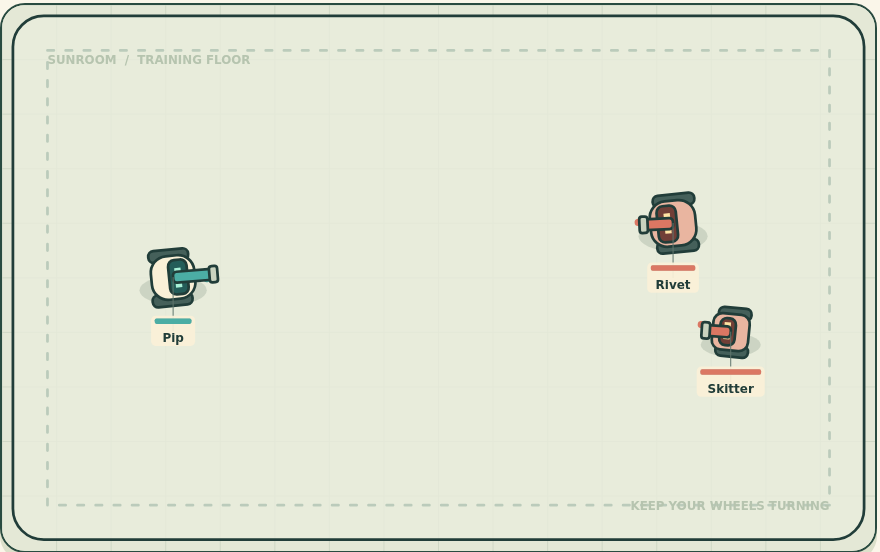
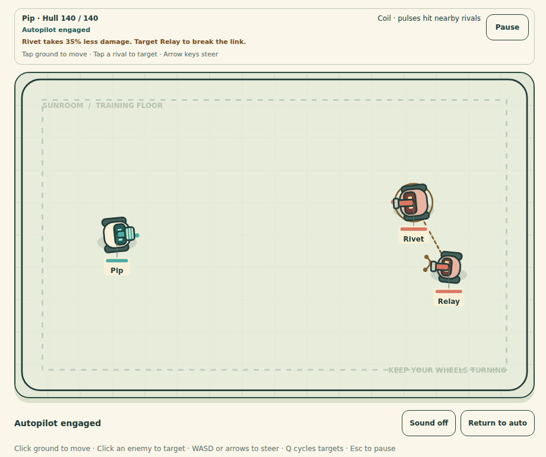
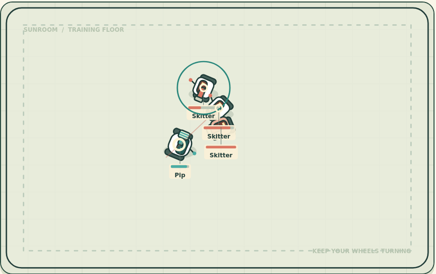
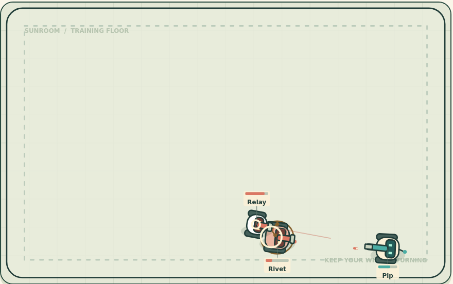
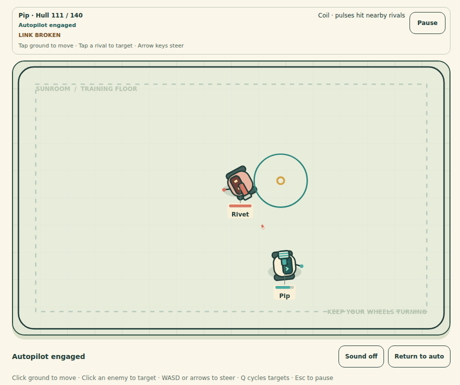

Classic · One rival

Both original weapons stopped at the first rival. Their main differences were damage and reach.
01 / A SMALL, FOCUSED EXPANSION
Two weapons with different jobs. One partnership worth breaking.
Linked Trouble builds on the original five-fight circuit. Choose your gear, watch Pip work, and step in when you see an opening.
Play Linked TroubleThe original game is still playable in Classic.

02 / BEFORE AND AFTER

Both original weapons stopped at the first rival. Their main differences were damage and reach.

The impact now pulses outward. Nearby rivals take secondary damage, even off the shot line.

A bolt can hit two aligned rivals. The second takes a weaker hit, even beyond a Coil pulse's reach.
Actual arena crops from separate ordinary-controls runs. No synthetic combat or added impact artwork. Watch the effects in motion.
03 / A TARGET CHOICE THAT MATTERS
Relay reduces damage to Rivet while it lives. The thin link shows who is helping whom.

Click or tap Relay to focus it first. Its partner loses protection immediately. Pip can also handle the pair on autopilot.
In the recorded Coil route, one ordinary target click starts this change. Gear, targeting and enemy behavior work together without a new button.
04 / KEEP THE GOOD PARTS
One starter, four gear choices and two repairs. Choosing a reward restores hull. Both weapon directions have completed real browser runs.
Move while firing. Pick a target without losing your route. Read the Chief's warning and move sideways. Return to auto whenever you like.
Original robot drawings, clear weapon shapes and restrained reactions. Keyboard and touch, pause, reduced motion and optional muted-by-default sound remain.
Same-machine comparison retained the original first fight and checked full wins, losses, repairs, controls and tab pause. It does not establish perfect balance or universal enjoyment.
05 / PLAY BOTH. PICK YOUR BUILD.
A standalone browser game. No account, cloud AI, analytics or installation.
Play Linked Trouble
Play Classic v1
Watch the new captioned demo
Version 1.1 source and runnable download
Browse the source
Unchanged original release and media
Testing and critical review are agent-only, not human playtesting. Browser checks use Chromium with emulated viewports, not physical-device or Safari certification.
Arrow keys move between slides. Home and End jump to the first and last. Download the five-slide PDF.